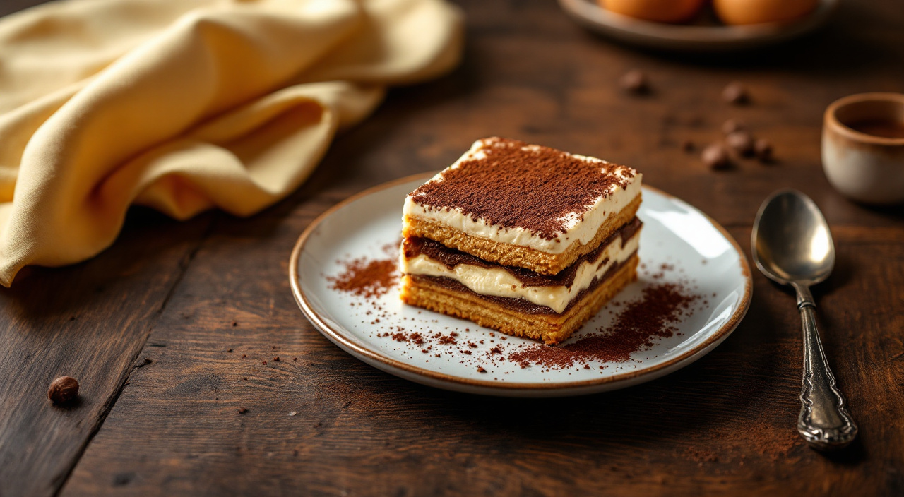
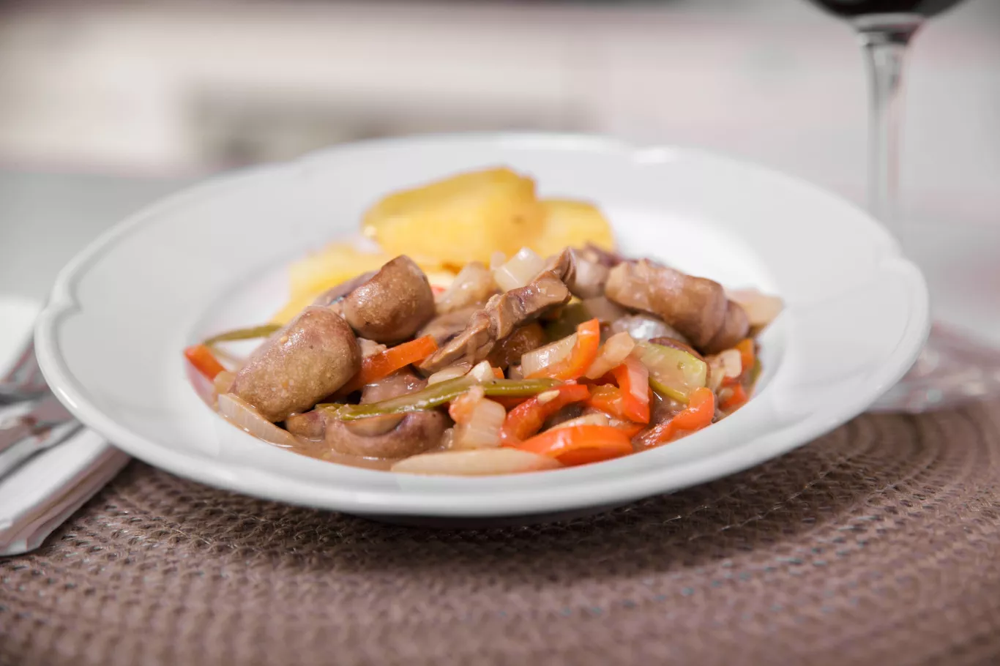
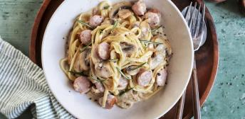
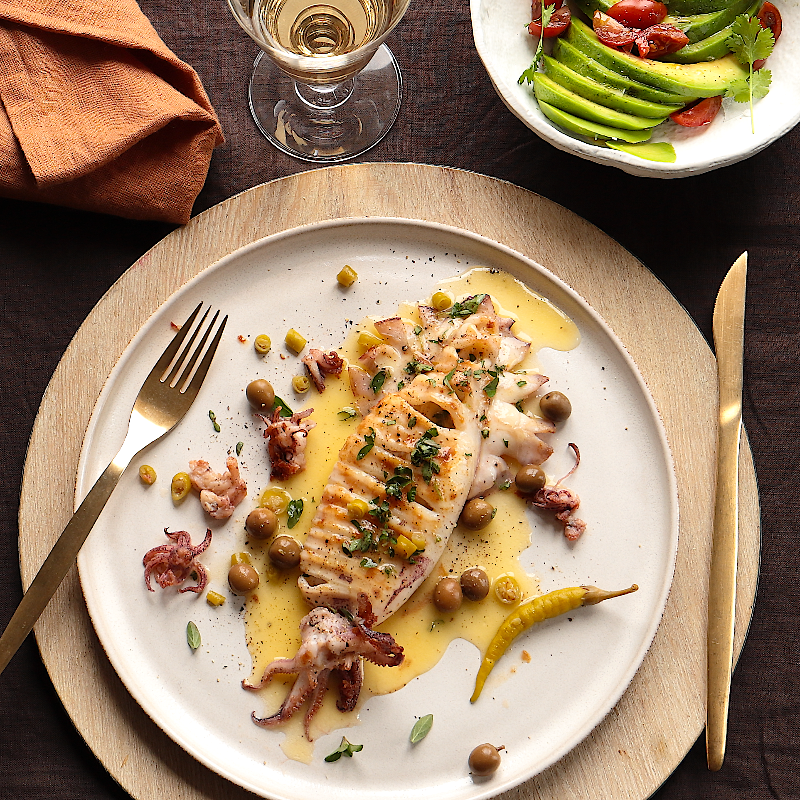
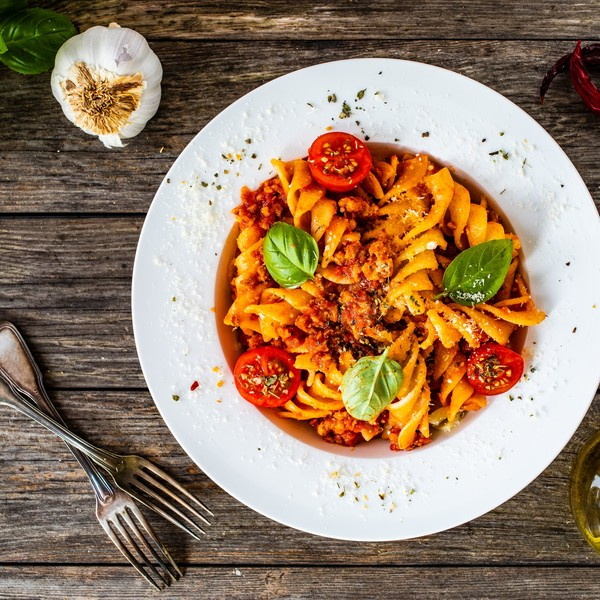
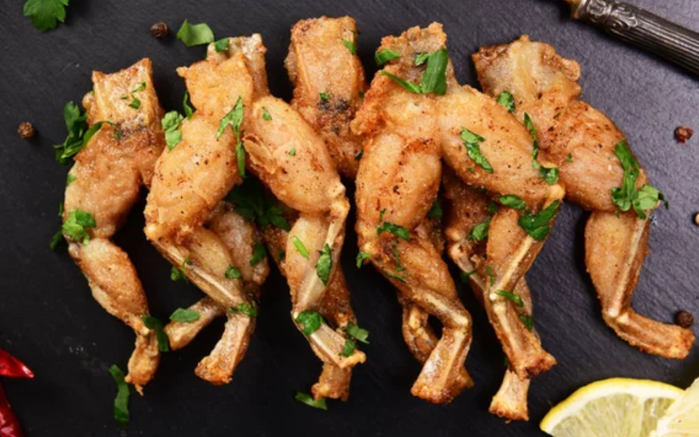
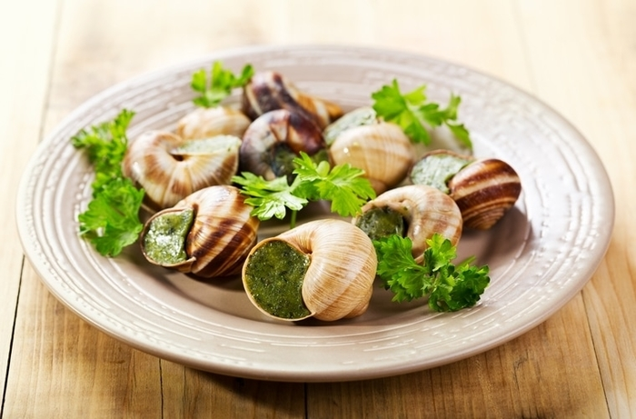
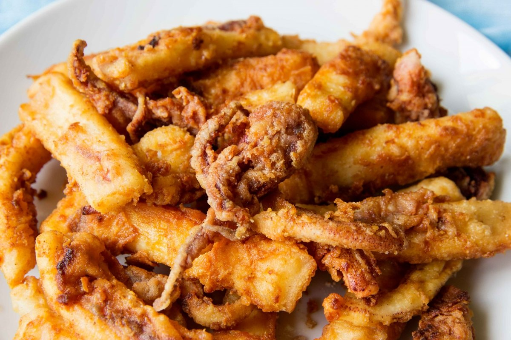
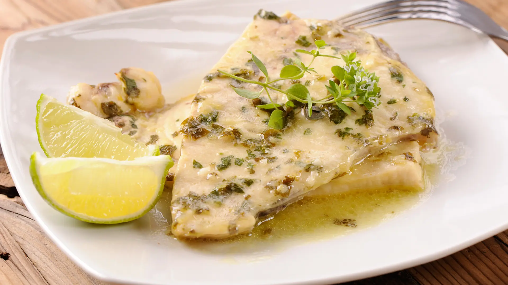

Mondongo a la Italiana

Riñones al Vino Blanco

Tallarines al Verdeo

Calamarettis a la Escarpeta

Fusiles al Ferretto

Ranas a la Provenzal

Caracoles a la Bordaleza

Rabas a la Calabria

Merluza al Ajillo

Gambas al Ajillo
.jpg.avif)